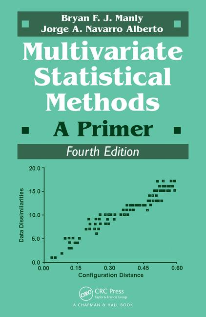

# Install librarian (if you need to)
# install.packages("librarian")
# Install (if not already present) and load needed libraries
librarian::shelf(vegan, RRPP, scatterplot3d, TeachingDemos, supportR)

librarian package makes library management much simpler
vegan package includes some lichen community composition data we can use for exploratory purposes
# Load vegan's lichen dataset
utils::data("varespec", package = 'vegan')
# Make some columns of known number of groups
treatment <- c(rep.int("Trt1", (nrow(varespec)/4)),
rep.int("Trt2", (nrow(varespec)/4)),
rep.int("Trt3", (nrow(varespec)/4)),
rep.int("Trt4", (nrow(varespec)/4)))
# And combine them into a single data object
lichen_df <- cbind(treatment, varespec)'data.frame': 24 obs. of 45 variables:
$ treatment: chr "Trt1" "Trt1" "Trt1" "Trt1" ...
$ Callvulg : num 0.55 0.67 0.1 0 0 ...
$ Empenigr : num 11.13 0.17 1.55 15.13 12.68 ...
$ Rhodtome : num 0 0 0 2.42 0 0 1.55 0 0.35 0.07 ...
$ Vaccmyrt : num 0 0.35 0 5.92 0 ...
$ Vaccviti : num 17.8 12.1 13.5 16 23.7 ...
$ Pinusylv : num 0.07 0.12 0.25 0 0.03 0.12 0.1 0.1 0.05 0.12 ...
$ Descflex : num 0 0 0 3.7 0 0.02 0.78 0 0.4 0 ...
$ Betupube : num 0 0 0 0 0 0 0.02 0 0 0 ...
$ Vacculig : num 1.6 0 0 1.12 0 0 2 0 0.2 0 ...
$ Diphcomp : num 2.07 0 0 0 0 0 0 0 0 0.07 ...
$ Dicrsp : num 0 0.33 23.43 0 0 ...
$ Dicrfusc : num 1.62 10.92 0 3.63 3.42 ...
$ Dicrpoly : num 0 0.02 1.68 0 0.02 0.02 0 0.23 0.2 0 ...
$ Hylosple : num 0 0 0 6.7 0 0 0 0 9.97 0 ...
$ Pleuschr : num 4.67 37.75 32.92 58.07 19.42 ...
$ Polypili : num 0.02 0.02 0 0 0.02 0.02 0 0 0 0 ...
$ Polyjuni : num 0.13 0.23 0.23 0 2.12 1.58 0 0.02 0.08 0.02 ...
$ Polycomm : num 0 0 0 0.13 0 0.18 0 0 0 0 ...
$ Pohlnuta : num 0.13 0.03 0.32 0.02 0.17 0.07 0.1 0.13 0.07 0.03 ...
$ Ptilcili : num 0.12 0.02 0.03 0.08 1.8 0.27 0.03 0.1 0.03 0.25 ...
$ Barbhatc : num 0 0 0 0.08 0.02 0.02 0 0 0 0.07 ...
$ Cladarbu : num 21.73 12.05 3.58 1.42 9.08 ...
$ Cladrang : num 21.47 8.13 5.52 7.63 9.22 ...
$ Cladstel : num 3.5 0.18 0.07 2.55 0.05 ...
$ Cladunci : num 0.3 2.65 8.93 0.15 0.73 0.25 2.38 0.82 0.05 0.95 ...
$ Cladcocc : num 0.18 0.13 0 0 0.08 0.1 0.17 0.15 0.02 0.17 ...
$ Cladcorn : num 0.23 0.18 0.2 0.38 1.42 0.25 0.13 0.05 0.03 0.05 ...
$ Cladgrac : num 0.25 0.23 0.48 0.12 0.5 0.18 0.18 0.22 0.07 0.23 ...
$ Cladfimb : num 0.25 0.25 0 0.1 0.17 0.1 0.2 0.22 0.1 0.18 ...
$ Cladcris : num 0.23 1.23 0.07 0.03 1.78 0.12 0.2 0.17 0.02 0.57 ...
$ Cladchlo : num 0 0 0.1 0 0.05 0.05 0.02 0 0 0.02 ...
$ Cladbotr : num 0 0 0.02 0.02 0.05 0.02 0 0 0.02 0.07 ...
$ Cladamau : num 0.08 0 0 0 0 0 0 0 0 0 ...
$ Cladsp : num 0.02 0 0 0.02 0 0 0.02 0.02 0 0.07 ...
$ Cetreric : num 0.02 0.15 0.78 0 0 0 0.02 0.18 0 0.18 ...
$ Cetrisla : num 0 0.03 0.12 0 0 0 0 0.08 0.02 0.02 ...
$ Flavniva : num 0.12 0 0 0 0.02 0.02 0 0 0 0 ...
$ Nepharct : num 0.02 0 0 0 0 0 0 0 0 0 ...
$ Stersp : num 0.62 0.85 0.03 0 1.58 0.28 0 0.03 0.02 0.03 ...
$ Peltapht : num 0.02 0 0 0.07 0.33 0 0 0 0 0.02 ...
$ Icmaeric : num 0 0 0 0 0 0 0 0.07 0 0 ...
$ Cladcerv : num 0 0 0 0 0 0 0 0 0 0 ...
$ Claddefo : num 0.25 1 0.33 0.15 1.97 0.37 0.15 0.67 0.08 0.47 ...
$ Cladphyl : num 0 0 0 0 0 0 0 0 0 0 ...RRPP package to use permutation analysis
RRPP does require a special class of data object to perform analysisiter argument is the number of permutationsRRPP argument is whether to permute residuals (TRUE) or the full data (FALSE)anova function
# Check out the results of the analysis!
RRPP::anova.lm.rrpp(lich_fit, effect.type = "F", print.progress = F)
Analysis of Variance, using Residual Randomization
Permutation procedure: Randomization of null model residuals
Number of permutations: 1000
Estimation method: Ordinary Least Squares
Sums of Squares and Cross-products: Type I
Effect sizes (Z) based on F distributions
Df SS MS Rsq F Z Pr(>F)
treatment 3 19602 6533.9 0.46682 5.8369 3.655 0.001 **
Residuals 20 22388 1119.4 0.53318
Total 23 41990
---
Signif. codes: 0 '***' 0.001 '**' 0.01 '*' 0.05 '.' 0.1 ' ' 1
Call: RRPP::lm.rrpp(f1 = community ~ treatment, iter = 999, RRPP = T,
data = lichen_rpdf)Z column is the “Z score” and is essentially the effect size# Perform pairwise comparisons
lich_pairs <- RRPP::pairwise(fit = lich_fit, groups = treatment)
# Check results
summary(lich_pairs)
Pairwise comparisons
Groups: Trt1 Trt2 Trt3 Trt4
RRPP: 1000 permutations
LS means:
Vectors hidden (use show.vectors = TRUE to view)
Pairwise distances between means, plus statistics
d UCL (95%) Z Pr > d
Trt1:Trt2 16.48128 39.64863 -0.7289177 0.760
Trt1:Trt3 38.04299 40.10757 1.5478150 0.067
Trt1:Trt4 59.41369 38.99550 2.9255939 0.001
Trt2:Trt3 37.15261 38.01919 1.5148939 0.063
Trt2:Trt4 62.40360 39.28595 3.0093479 0.001
Trt3:Trt4 50.44284 40.37863 2.2553908 0.005
# Perform Principal Components Analysis
lich_pc <- prcomp(x = varespec)
# Summarize it to calculate '% variation explained' for each PC axis
lich_pc_smry <- summary(lich_pc)
# Check the structure of the summarized object
str(lich_pc_smry)List of 6
$ sdev : num [1:24] 31.35 21.55 11.5 8.6 6.96 ...
$ rotation : num [1:44, 1:24] -0.01399 0.01566 -0.00646 -0.05168 0.00858 ...
..- attr(*, "dimnames")=List of 2
.. ..$ : chr [1:44] "Callvulg" "Empenigr" "Rhodtome" "Vaccmyrt" ...
.. ..$ : chr [1:24] "PC1" "PC2" "PC3" "PC4" ...
$ center : Named num [1:44] 1.88 6.33 0.35 2.11 11.46 ...
..- attr(*, "names")= chr [1:44] "Callvulg" "Empenigr" "Rhodtome" "Vaccmyrt" ...
$ scale : logi FALSE
$ x : num [1:24, 1:24] -10.8 -27.8 -25.7 -31.8 -19.6 ...
..- attr(*, "dimnames")=List of 2
.. ..$ : chr [1:24] "18" "15" "24" "27" ...
.. ..$ : chr [1:24] "PC1" "PC2" "PC3" "PC4" ...
$ importance: num [1:3, 1:24] 31.352 0.538 0.538 21.548 0.254 ...
..- attr(*, "dimnames")=List of 2
.. ..$ : chr [1:3] "Standard deviation" "Proportion of Variance" "Cumulative Proportion"
.. ..$ : chr [1:24] "PC1" "PC2" "PC3" "PC4" ...
- attr(*, "class")= chr "summary.prcomp"# With that done, we can make a graph of that information!
plot(x = lich_pc$x[,1], y = lich_pc$x[,2], pch = 20,
## And do some fancy axis labels to get 'variation explained' in the plot
xlab = paste0("PC1 (", (lich_pc_smry$importance[2, 1] * 100), " % variation explained)"),
ylab = paste0("PC2 (", (lich_pc_smry$importance[2, 2] * 100), " % variation explained)"))
distance is your preferred metric for dissimilarityk is the number of axes to scale to (typically 2 for standard plotting)try is the number of starting data configurations (remember the helicopter analogy!)supportR package to make the graph